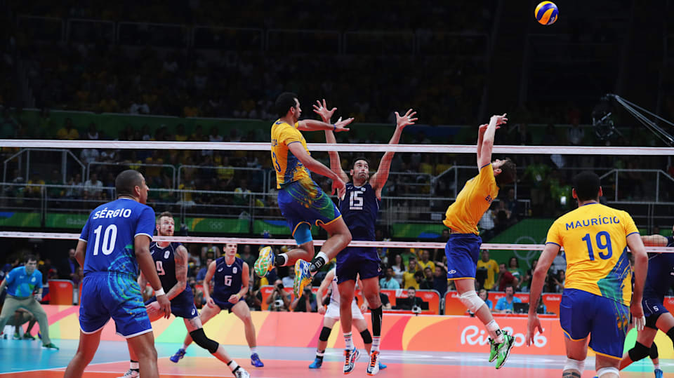

My favorites!
Favourite Video Games
Video games are one my greatest hobbies! I absolutely love playing video games. One of the video game I love playing is Minecraft.
- Minecraft is essentially an open world sandbox game where the goal is to loot up and get geared enough to kill the final boss, the Ender Dragon.
- Since the game is a openworld sandbox game, you have the ability to build and do things that you want!
- Minecraft is very popular with over 166 million players!

More about Minecraft!
Favourite Sport
Volleyball is one of the sports that I enjoy greatly and it's my favourite sport. It's absolutely amazing to play with a group of friends!
- Essentially, volleyball is where two teams of 6 are against eachother with a net in the middle. The goal is to get the ball to hit the floor of the other teams sides.
- The sport is very competitive and popular throughout the world!

More Volleyball!
Favourite Food
Food is just the best thing to ever exist on this planet. The best food to exist in the world, in my oponion, is donair poutine.
- Donair poutine is just poutine, however the difference is that the sauces are different as well as you get shawarma on top of the fries.
- Donair poutine is a very delicious and popular food throughout the world!
.jfif)
Donair poutine Recipe!